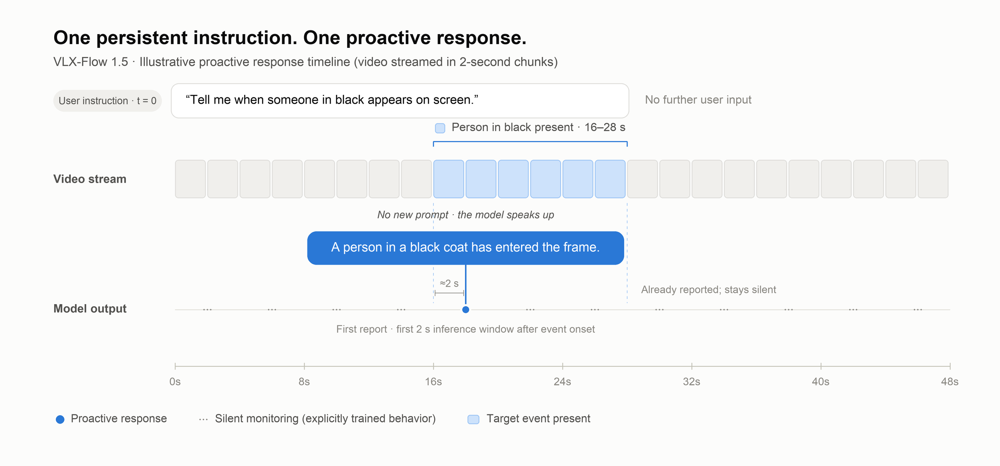

Highlights
- 🌊 Streaming continuous understanding: Video arrives as a continuous sequence of chunks, the two-layer memory updates incrementally, and the recurrent state of Linear Attention retains historical information — no rewatching past video, with first-token latency and memory usage staying stable over long runs.
- 💬 Stronger proactive response: With a single persistent natural-language instruction, the model keeps watching and stays silent, and responds proactively the moment a target event appears; silence and response timing now work together more reliably, with fewer repeated outputs.
- 🎬 More coherent continuous description: Cross-chunk semantic continuity keeps long-form descriptions from breaking up or repeating, tracks scene changes more closely, and provides embodied applications with coherent environmental semantics.
- 🔍 Fewer interaction hallucinations: Answers and proactive responses are both grounded in visual evidence; the model appropriately declines to answer when evidence is insufficient, reducing unsupported speculation and false event triggers, making continuous on-device interaction more trustworthy.
- 🚀 Higher inference efficiency: Incremental updates and reuse of cached states eliminate repeated computation over historical video, while silence control cuts redundant output tokens and decoding overhead — a better fit for on-device deployment where latency and compute are tightly constrained.
Summary
VLX-Flow is an on-device streaming multimodal model for real-time video, providing continuously available video understanding on local devices. Built around continuous video input, incremental state updates, and persistent memory, it turns constantly arriving footage into reusable semantic context. Within this streaming architecture, the model can continuously describe the video, answer real-time questions based on what it has already observed, and proactively respond to events of interest under natural-language instructions — so that video understanding spans the full process before and after interactions take place.
Building on the previous generation of the Flow model, VLX-Flow 1.5 enhances proactive response, continuous description, and real-time question answering: proactive response is reworked around event triggering and silence control, with more restrained behavior and fewer repeated outputs; continuous description is more coherent and timely; and real-time QA pays closer attention to visual grounding, appropriately declining to answer when evidence is insufficient. More restrained output and lower generation overhead let these three capabilities work together more naturally — and more credibly — over long-running operation on device.
1. VLX-Flow: A Streaming Architecture for Continuous Video Understanding
Cameras keep recording, robots keep moving, and screen content keeps changing. For inputs like these, streaming video understanding needs to begin the moment frames arrive, and to draw on previously accumulated information in time whenever the user asks a question or a target event occurs. The core of streaming video understanding is to continuously convert video information arriving over time into model state that can be updated and reused. Input, memory, and interaction are thereby linked into a continuous timeline, and the model can carry its existing observational context into every response.
Toward this goal, the previous generation of the Flow model established a streaming inference architecture that combines incremental visual encoding with state recurrence: video enters the model as consecutive chunks in temporal order, the visual encoder extracts features from the current chunk, and the language backbone performs incremental inference on top of the existing state — without rewatching historical video. A two-layer memory mechanism continuously maintains what has been observed: the visual cache retains recent visual detail, while the semantic memory accumulates interaction history. The Linear Attention module in the language backbone aggregates historical information through a recurrent state, keeping response latency and memory usage under control during continuous operation.
On top of this streaming context, proactive response, continuous description, and real-time question answering form three interlocking modes of interaction: continuous description narrates scene changes as the video progresses; real-time question answering responds to questions arriving at any moment from existing memory; and proactive response keeps watching under user instructions and speaks up when a target event appears. Together they embody the streaming character of Flow: observation proceeds continuously, state updates incrementally, and interaction happens at any time. VLX-Flow 1.5 inherits this architectural foundation and further improves the expressive quality of continuous understanding, real-time inference efficiency, and the reliability of interactive behavior, so that the streaming state supports these three capabilities more effectively.
2. VLX-Flow 1.5: Enhancements in Three Directions
2.1 Proactive Response: From Passive Answering to Speaking Up
Mainstream video models are passive interfaces: one input, one answer — they answer whatever is asked. To make such a model "watch" for something, the only option is polling at the application layer: grab a clip every few seconds and repeatedly ask, "Has the target appeared in the frame?" This workaround is costly. Every round is an independent call: poll too slowly and events get missed; poll too often and compute is wasted on a pile of "not yet" answers. Polling itself carries no state — deduplication, throttling, and event boundaries all have to be maintained by the application layer — and any slip means the same event gets reported over and over. The task of "watching" is effectively outsourced to external scheduling logic.
For on-device deployment, this workaround is a particularly poor fit: compute and power are already constrained, and the repeated inference of polling is pure overhead. What monitoring applications actually need is "low overhead in quiet times, timely response at critical moments." Proactive response brings "watching" back inside the model: the user sets the target event of interest with a single persistent natural-language instruction, and from then on the model keeps observing the video stream and speaks up when the event appears — no repeated asking required. The shape of video applications changes accordingly: a camera goes from passive recording to monitoring by task, a robot can proactively report notable changes in its environment, and while the device keeps watching, the person only handles what truly needs handling once reminded.
The difficulty of this capability lies in "timing." The previous Flow model already provided the foundations of event-triggered interaction, but trigger stability and output restraint still had room to improve: similar-looking scenes misjudged as targets, the same event emitted repeatedly. Other streaming video models of this type face more fundamental problems: some can hardly stay quiet amid continuous output; some treat a persistent instruction as a one-shot question and jump in with an answer before any evidence appears; and still others require the user to keep issuing instructions to maintain streaming monitoring. For monitoring tasks, premature, false, and missed reports all strip proactive response of its value — with the wrong timing, however fluent the reply, it cannot be trusted.
VLX-Flow 1.5 optimizes around instruction-conditioned event judgment and temporal response strategy, tightening the correspondence between visual evidence, instruction conditions, and response timing: the model weighs the instruction's requirements, the current visual evidence, and its own reply history to decide, at each moment, whether to keep observing, respond proactively, or — after a reply — return to silence and wait for the next qualifying event. Event recognition and output timing now work together more stably: repeated outputs are fewer, output concentrates on the information the user cares about, and proactive behavior keeps better pace with the continuous video stream.
For example, a user tells an office camera, "Tell me when someone in a black coat appears on screen," and then leaves their seat. Amid the coming and going of people and the changing light, the model observes in silence; the moment the target appears — with no question asked — it responds proactively, then returns to silence.

After a persistent instruction is given, the model observes continuously; once the target event appears, it responds promptly and proactively, then returns to silence and waits for the next qualifying event.
A key training direction behind these improvements is streaming behavior supervision for continuous interaction. On top of the existing streaming supervised fine-tuning framework, VLX-Flow 1.5 aligns response content with round-by-round interaction state, explicitly supervising whether the instruction condition is currently met, whether a reply has already been given, and whether the model should keep observing. The accuracy of silence decisions and the timeliness of proactive responses are likewise important supervision targets during training: staying silent when no reply is needed is part of executing the task correctly, while replying promptly when a response is required ensures the proactive capability does not lose its effectiveness as output is reduced.
On top of behavior supervision, proactive response also needs an optimization method closer to the task itself: "when to speak" is a round-by-round sequential decision, and it is hard to pre-annotate standard answers for every combination of scene and instruction. To this end, the accompanying post-training pipeline builds on the VLM-R1 multimodal reinforcement learning paradigm and constructs a streaming reinforcement learning (Streaming RL) procedure for continuous video: within a complete streaming episode, the model generates round by round in temporal order, carries the interaction history it has produced into subsequent decisions, and is evaluated by reward signals over the whole trajectory of behavior rather than on each output in isolation. The reward design covers three elements of proactive behavior. Semantic quality assessment checks whether the reply is consistent with the visual input. Event-timing rewards align responses with trigger moments — premature answers before an event appears are suppressed, timely replies within the event window are reinforced, repeated outputs after a report has been made are explicitly penalized, and reasonable waiting is treated differently from missed events. Trajectory comparison: multiple response trajectories over the same video stream are compared against each other, further reducing dependence on absolute scores. In this way, the optimization objective extends from "answering correctly" to "saying the right thing at the right moment," providing targeted reinforcement for proactive response and silence control, and further strengthening instruction following and the timeliness of event-triggered responses in the proactive mode.
2.2 Continuous Description: Stronger Temporal Coherence, More Timely Response
Continuous description is a foundational capability of streaming understanding: as the video progresses, the model narrates changes in the scene, subjects, actions, and events. It is both an output users directly perceive and one of the sources of semantic context memory. In on-device embodied scenarios, continuous description provides continuously updated environmental semantics: embodied devices use it to understand changes in the environment, while screen assistants and camera applications use it to deliver running commentary.
The difficulty of long-form description lies in "coherence" and "no repetition." The previous Flow model already supported continuous narration as video progresses, but over longer streams, narration between chunks could still fracture or repeat itself. The problem is more pronounced in similar streaming models: typical failure modes are either replaying the same passage over and over, or the output breaking into word streams that no longer form sentences. For on-device systems that must run stably for long periods, fractured descriptions make the semantic history hard to reference, while repetitive output brings pointless generation overhead — which is why continuous description had to improve further.
VLX-Flow 1.5 strengthens this by reinforcing cross-chunk semantic continuity, supported by memory supervision over temporal recurrence: the model describes current changes in the context of previous scene states, keeping the timeline — "who is continuing to do what," "how object positions are changing," "whether an earlier event is still developing" — unbroken and non-repetitive across long streams. For example, when a person picks up a cup, walks to a table, and puts the cup down, this chain of actions stays connected in the streaming context, so when the user later asks, "What did he just put on the table?", the model can answer directly. More coherent and timely continuous description brings long-form narration, first-person observation, and screen-content understanding closer to a live commentator who never takes their eyes off the frame, and gives on-device systems a reliable semantic foundation about the environment.
2.3 Real-Time Question Answering: Stronger Visual Grounding, Fewer Unfounded Answers
Real-time question answering lets users ask questions at any moment while watching; the model answers directly from the frames it has already seen, without going back to rewatch the recording. While watching a video, a user may want to confirm details of the current frame at any time; in monitoring and inspection, questions often come only after an event has happened — in either case, the answer can only rest on what has already been observed. This is precisely why answers must be grounded: an ungrounded answer can directly mislead the user's judgment about the scene.
The difficulty is that a user's question is not guaranteed to have support in the observed frames — the thing being asked about may never have appeared in the video at all. A model that must answer from existing observations must therefore distinguish precisely between "what was seen" and "what was not seen." The previous Flow model could answer from observation in most cases, but when confronted with things absent from the frame, it could still produce a "plausible-looking" answer instead of admitting it had not seen them; in similar streaming models, under the pressure of continuous output, unfounded descriptions and premature answers are even more common. For on-device and embodied applications, this kind of "confident fabrication" is more harmful than a candid "I didn't see it" — it passes a wrong judgment on to every decision downstream.
VLX-Flow 1.5 tightens the visual-grounding constraint on question answering, making the model more careful about separating observed facts from claims that lack sufficient support. For example, when a user asks about a street scene, "Which way did that ship go just now?", if no ship has appeared in the observed frames, the model will point out that "no ship was seen in the observed frames"; for content it cannot confirm, it also states its uncertainty appropriately. By better dividing when to answer and when to decline, the model reduces speculation without visual grounding while retaining its normal QA ability — what is calibrated is "whether there is evidence," not "talking less."
3. Evaluation: Comparison on Public Benchmarks
We evaluated VLX-Flow 1.5 on three public streaming video benchmarks. StreamingBench examines understanding of frames as they arrive in real time; its Real-Time Visual section covers ten task types including object recognition, causal reasoning, and counting. OVO-Bench examines online video understanding from three temporal perspectives: retrospective (recalling frames already seen), real-time (understanding what is happening now), and forward (waiting for a target given by the instruction to appear later in the stream, and answering promptly once the evidence is sufficient). TraceBench specifically examines streaming interaction behavior, covering real-time question answering and proactive response under persistent instructions, while also recording other performance dimensions such as latency, token consumption, and completion rate. Scores for comparison models are compiled from the official leaderboards and papers of each benchmark. StreamingBench and OVO-Bench are evaluated in a streaming manner aligned with the official settings; in the aligned evaluation, VLX-Flow 1.5 uses a QA mode that views an average of 64 frames per question.
Table 1. StreamingBench Real-Time Visual: overall and per-task. Task columns: OP = object recognition, CR = causal reasoning, CS = clip summary, ATP = attribute recognition, EU = event understanding, TR = text recognition, PR = prospective reasoning, SU = spatial understanding, ACP = action recognition, CT = counting.
| Model | Overall | OP | CR | CS | ATP | EU | TR | PR | SU | ACP | CT |
|---|---|---|---|---|---|---|---|---|---|---|---|
| VLX-Flow 1.5 | 85.00 | 91.83 | 86.72 | 92.11 | 91.18 | 85.71 | 94.70 | 83.33 | 76.83 | 82.44 | 48.70 |
| AURA | 83.20 | 87.5 | 84.4 | 93.4 | 89.5 | 83.2 | 87.9 | 86.1 | 76.4 | 82.4 | 47.7 |
| MOSS-VL-Realtime | 82.90 | 86.6 | 81.8 | 87.9 | 87.5 | 84.7 | 82.4 | 83.3 | 75.3 | 80.6 | 52.1 |
| MiniCPM-o 2.6 | 79.88 | 85.01 | 85.94 | 89.91 | 85.95 | 80.12 | 86.60 | 76.85 | 74.80 | 74.79 | 46.11 |
| MiniCPM-o 4.5 | 78.20 | 80.9 | 88.3 | 82.0 | 85.0 | 78.9 | 85.4 | 78.7 | 67.1 | 75.6 | 56.0 |
| Gemini 1.5 Pro | 77.39 | 83.43 | 77.94 | 89.24 | 81.65 | 79.17 | 83.92 | 83.93 | 60.32 | 74.87 | 49.22 |
| InternLM-XC2.5-OL | 75.36 | 84.74 | 79.69 | 83.91 | 87.91 | 75.78 | 80.06 | 67.59 | 65.85 | 70.25 | 38.34 |
| GPT-4o | 74.54 | 80.66 | 76.98 | 86.67 | 73.81 | 75.95 | 85.48 | 75.00 | 70.66 | 65.99 | 43.09 |
| StreamAgent | 74.30 | 79.6 | 78.3 | 79.3 | 75.9 | 74.7 | 76.9 | 82.9 | 66.3 | 73.7 | 55.4 |
| LLaVA-OneVision-7B | 74.27 | 82.83 | 77.34 | 83.23 | 83.33 | 72.05 | 74.77 | 73.15 | 68.29 | 71.10 | 41.97 |
| Qwen3-VL-8B-Inst | 74.10 | 80.1 | 76.6 | 81.1 | 81.1 | 77.0 | 73.2 | 80.6 | 63.4 | 68.8 | 57.0 |
| Claude 3.5 Sonnet | 74.04 | 82.45 | 73.77 | 82.43 | 82.40 | 76.39 | 85.56 | 61.68 | 60.73 | 67.88 | 47.62 |
| MiniCPM-V 2.6 | 72.43 | 78.20 | 71.88 | 84.18 | 83.99 | 75.16 | 75.39 | 72.22 | 56.50 | 67.14 | 47.15 |
| Qwen2-VL-7B | 71.15 | 75.75 | 79.69 | 76.58 | 79.08 | 74.53 | 75.08 | 74.07 | 65.85 | 65.16 | 41.97 |
| VITA-1.5 | 70.88 | 77.66 | 82.81 | 82.33 | 79.34 | 72.67 | 71.34 | 67.59 | 62.20 | 69.12 | 32.12 |
| ViSpeak | 70.40 | 79.8 | 71.1 | 81.4 | 78.8 | 74.5 | 70.1 | 63.9 | 64.2 | 71.4 | 28.0 |
| InternVL2-8B | 70.11 | 73.84 | 65.63 | 78.80 | 82.03 | 71.43 | 72.90 | 73.15 | 63.01 | 65.44 | 42.49 |
| LLaVA-NeXT-Video-32B | 69.83 | 80.11 | 71.09 | 80.70 | 80.72 | 71.43 | 73.21 | 62.96 | 59.35 | 63.17 | 36.79 |
| Kangaroo | 65.76 | 77.57 | 74.22 | 75.70 | 74.38 | 70.91 | 62.86 | 52.63 | 50.54 | 63.97 | 33.16 |
| LongVA | 63.11 | 73.02 | 66.41 | 66.46 | 74.84 | 65.22 | 62.93 | 60.19 | 56.91 | 56.66 | 37.82 |
| VILA-1.5 | 61.54 | 71.12 | 57.81 | 74.68 | 72.22 | 70.81 | 62.62 | 51.85 | 51.22 | 60.34 | 18.65 |
| Video-CCAM-14B | 53.42 | 54.50 | 63.28 | 73.73 | 63.73 | 57.76 | 47.35 | 50.93 | 41.87 | 48.44 | 26.94 |
| VideoLLaMA 2 | 52.58 | 59.95 | 60.16 | 62.97 | 60.46 | 54.66 | 46.11 | 41.67 | 46.75 | 48.16 | 34.72 |
On this leaderboard, VLX-Flow 1.5 scores 85.00 — about 1.8 and 2.1 percentage points higher than AURA (83.20) and MOSS-VL-Realtime (82.90) respectively, and about 5.1 points higher than MiniCPM-o 2.6 (79.88). Per task, VLX-Flow 1.5 performs best on OP (object recognition), ATP (attribute recognition), EU (event understanding), and TR (text recognition), and ranks among the top on ACP (action recognition), CR (causal reasoning), CS (clip summary), and SU (spatial understanding); its relative weakness is CT (counting), which may relate to the streaming inference approach and will continue to be optimized.
Table 2. OVO-Bench (%): three groups and Overall. BT = retrospective, RTVP = real-time, FAR = forward; All is the macro average of the three groups.
| Model | BT | RTVP | FAR | All |
|---|---|---|---|---|
| VLX-Flow 1.5 | 78.39 | 79.54 | 53.60 | 70.51 |
| MOSS-VL-Realtime | 72.60 | 75.90 | 62.10 | 70.20 |
| AURA | 60.40 | 79.80 | 55.80 | 65.30 |
| Gemini 1.5 Pro | 62.54 | 69.32 | 57.15 | 63.00 |
| MiniCPM-o 4.5 | 55.90 | 67.30 | 55.90 | 59.70 |
| GPT-4o | 60.75 | 64.46 | 53.40 | 59.54 |
| ViSpeak | 57.50 | 66.30 | 54.20 | 59.30 |
| Streamo-7B | 49.20 | 67.40 | 57.00 | 57.90 |
| Qwen2-VL-72B | 56.95 | 61.92 | 49.30 | 56.27 |
| GPT-4.1 | 56.85 | 60.15 | 47.53 | 54.85 |
| LLaVA-Video-7B | 40.40 | 63.52 | 54.82 | 52.91 |
| LLaVA-OneVision-7B | 43.71 | 64.02 | 50.50 | 52.74 |
| Gemini 1.5 Flash | 57.98 | 57.20 | 42.86 | 52.68 |
| Qwen2-VL-7B | 46.46 | 55.98 | 48.74 | 50.39 |
| InternVL-V2-8B | 43.44 | 60.39 | 46.60 | 50.15 |
| StreamAgent | 41.70 | 61.30 | 45.40 | 49.40 |
| Qwen3-VL-8B-Inst. | 41.00 | 61.60 | 37.70 | 46.80 |
| LongVU-7B | 35.01 | 57.61 | 47.50 | 46.71 |
| Dispider-7B | 36.06 | 54.55 | 34.72 | 41.78 |
| Llama-3.2-11B-VL-Instruct | 41.07 | 49.79 | 33.55 | 41.47 |
| Stream-LLM-v1.5-7B | 35.38 | 38.05 | 29.68 | 34.37 |
| Flash-VStream-7B | 27.38 | 28.37 | 45.09 | 33.61 |
| VideoLLM-Online-8B | 17.73 | 20.79 | — | — |
| Human | 92.33 | 93.20 | 92.90 | 92.81 |
On the macro average of the three groups (Overall), VLX-Flow 1.5 reaches 70.51 — about 5.2 points above AURA's 65.30 and 7.5 above Gemini 1.5 Pro's 63.00, close to MOSS-VL-Realtime's 70.20. By group: retrospective (BT) at 78.39 is the highest among the listed models, with the runner-up MOSS-VL-Realtime at 72.60; real-time (RTVP) at 79.54 is close to AURA's 79.80; forward (FAR) at 53.60 is on par with GPT-4o and still relatively low among streaming video models — the weakest of the three groups, and a clear goal for the next stage.
Table 3. TraceBench v1.1.
| Model | QA Accuracy ↑ (%) | QA Completion ↑ (%) | Response Latency ↓ (ms) | In-window Accuracy ↑ (%) | Median Response Delay ↓ (s) | False-alarm Rate ↓ (%) | Miss Rate ↓ (%) | Invalid Output ↓ (%) |
|---|---|---|---|---|---|---|---|---|
| VLX-Flow 1.5 | 76.5 | 100.0 | 560 | 21.1 | 0.34 | 63.9 | 20.3 | 4.1 |
| MOSS-VL | 75.03 | 99.88 | 374.6 | 8.05 | 0.33 | 41.1 | 47.24 | 0.84 |
| AURA | 73.83 | 99.88 | 819.7 | 7.92 | 1.15 | 59.1 | 47.64 | 0.60 |
| LiveCC | 65.19 | 93.88 | 165.2 | 12.98 | 1.08 | 65.0 | 0.31 | 6.12 |
| MOSS-Preview | 65.07 | 100 | 138.1 | 4.45 | 0.20 | 77.7 | 35.67 | 1.92 |
| ThinkStream | 61.46 | 100 | 411 | 0.52 | 2.14 | 73.6 | 68.43 | 0 |
| VideoLLM-Online | 2.64 | 100 | 681.1 | 0.18 | 0.20 | 82.4 | 60.39 | 95.32 |
| MiniCPM-O (native duplex) | 2.40 | 100 | 489.5 | 0.51 | 1.24 | 80.3 | 65.43 | 93.52 |
| JoyAI (Agent System) | 67.47 | 91.36 | 876.1 | 17.08 | 1.12 | 50.5 | 32.13 | 8.52 |
On QA accuracy, VLX-Flow 1.5 reaches 76.5, ahead of the runner-up MOSS-VL (75.03), with a 100% completion rate; QA response latency is 560 ms, with 4.1% invalid output (responses from which no valid option label could be extracted). On the proactive track, in-window accuracy of 21.1 is the highest in the table, leading the runner-up JoyAI (Agent System) at 17.08 by about 4 percentage points, and the miss rate of 20.3% is the second lowest in the table (above only LiveCC, which outputs continuously, at 0.31; most baselines fall in 30–68%); the false-alarm rate of 63.9% is on the high side of the table and a clear priority for the next stage; median response delay is 0.34 s, comparable to MOSS-VL (0.33 s).
4. Engineering Value: More Efficient Streaming Inference, More Timely Continuous Interaction
The streaming architecture lets video understanding run resident on the device — watching continuously, remembering continuously, understanding locally; this value was established in the previous generation of the Flow model. The engineering increment of VLX-Flow 1.5 makes every link of continuous operation more efficient: incremental updates and on-demand output reduce computation and generation overhead, continuous description follows scene changes more promptly, and waits in real-time question answering and proactive response stay predictable, and the rhythm of the three interaction capabilities truly matches the video stream itself.
The more substantial savings come from "speaking less." The previous architecture already proposed the principle of generate-on-demand; 1.5 turns it into the model's second nature through behavior training: silent when silence is due, no repetition once something has been reported — the video must be watched continuously, but output can be given on demand. For applications, this is not just interaction experience but operating cost: less output means lower generation overhead, the load of long-running operation no longer climbs without bound as video length grows, and the application no longer has to filter, store, and process large amounts of useless output.
These values ultimately land in the embodied scenarios of the three interaction capabilities. Robots gain continuously updated environmental semantics as a reference for navigation and interaction, without re-perceiving the scene for every judgment; camera applications monitor by task and report proactively, so no one needs to watch the screen — people handle only what truly needs handling when reminded; video assistants and screen assistants provide running commentary and instantly answered questions locally, with narration that keeps up with the content and questions that involve no waiting.
VLX-Flow 1.5 continues to serve as the Semantics layer of the VLX system, converting continuous footage into semantic context that can be continuously updated and invoked through interaction. The streaming architecture provides the foundation for continuous understanding, and lower running overhead, timely responses, and more trustworthy output allow this set of capabilities to run for the long term on real devices — while providing continuous semantic support for subsequent capabilities such as object localization, tracking, and embodied interaction.